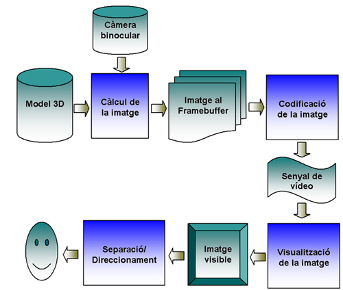

Visió estereoscòpica.
Procés de generació d'imatges estereoscòpiques
En aquest apartat estudiarem el procés complet de generació
d'imatges estereoscòpiques per computador, des del punt de partida on
només tenim un model geomètric 3D, fins a l'objectiu final que és
projectar a les retines del participant una imatge amb disparitat
retinal.
En el procés de generació d'imatges estereoscòpiques distingirem
bàsicament quatre etapes, il·lustrades en aquesta figura:

Aquestes quatre etapes són:
- Càlcul de la imatge. El càlcul de la imatge inclou bàsicament el procés de visualització 3D
que vam estudiar al capítol 6, amb la diferència de que hem de generar dues
imatges, una per cada ull. El càlcul de la imatge es basa en el model 3D i
en els paràmetres de la càmera binocular, a partir dels quals es genera en
el frame buffer (memòria de vídeo) una representació digital de la imatge.
- Codificació de la imatge. Per codificació de la
imatge entenem, per una banda, el format intern en que s'emmagatzemen les
imatges en el frame buffer, i per altra banda, la seva codificació en un senyal de
vídeo.
- Visualització de la imatge. La visualització
de la imatge consisteix en crear una imatge física (visible) en un
dispositiu de visualització a partir de la senyal de vídeo. Els
dispositius de visualització com els monitors i els projectors es basen en
una pantalla on es genera físicament la imatge (tret dels dispositius
làser que projecten directament a la retina).
- Separació/Direccionament. S'anomena així el mecanisme que permet fer arribar a cada retina la imatge que li correspon.
Per exemple, si les imatges s'han generat amb la tècnica de separació de
colors (vermell per l'ull esquerre i blau per l'ull dret), la separació és
duta a terme per unes ulleres especials.
En els següents apartats s'expliquen una mica més en detall aquestes
etapes.